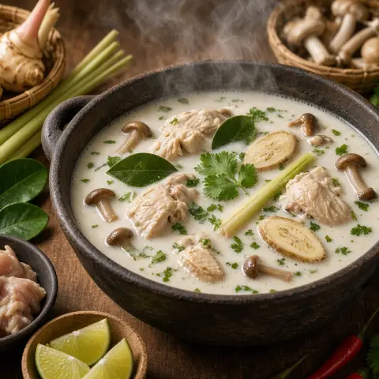

🥥 トムカーガイ（ココナッツチキンスープ）
ガランガル、レモングラス、こぶみかんの葉が香るクリーミーなココナッツスープに、やわらかい鶏肉ときのこ。
材料
- 鶏肉340 g
- 片栗粉2 小さじ
- サラダ油5 小さじ
- ナンプラー2.5 大さじ
- きのこ225 g
- 鶏ガラスープ720 ml
- レモングラス1 本
- ガランガル8 枚
- こぶみかんの葉3
- 唐辛子2
- 砂糖1 大さじ
- ココナッツミルク400 ml
- ライム2
- ハーブ1 束
作り方
- 鶏肉を細切りにし、片栗粉、油小さじ2、ナンプラー小さじ2をからめる。
- 鍋に油大さじ1を中強火で熱し、薄切りのきのこをしんなりするまで炒める。
- スープ、たたいたレモングラス、ガランガル、ちぎったこぶみかんの葉、半分に切った唐辛子、砂糖を加える。煮立ったらふたをして弱火で6分煮る。
- ココナッツミルクを加え、ぐらぐら煮立てないように再び弱く煮立てる。鶏肉を加えてふたをし、中弱火で8分、中まで火を通す。
- 火を止め、残りのナンプラー、ライム果汁、刻んだパクチーを加える。レモングラス、ガランガル、こぶみかんの葉は食べる前に取り除く。